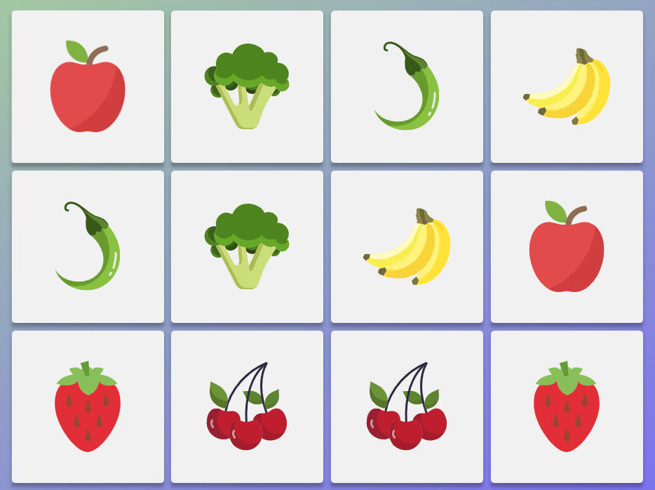

Bienvenue sur le site du Memory de l'ENI.
Venez jouer avec nous et retrouvez toutes les paires de cartes.
Règle du jeu :
- Retournez deux cartes. Si les images sont identiques, le jeu laisse les cartes visibles.
- Si les images sont différentes, les cartes se retournent faces cachées là où elles étaient.
- La partie est terminée lorsque toutes les cartes ont été assemblées par paires.

Si vous voulez relancer une partie, appuyez sur la barre d'espace.